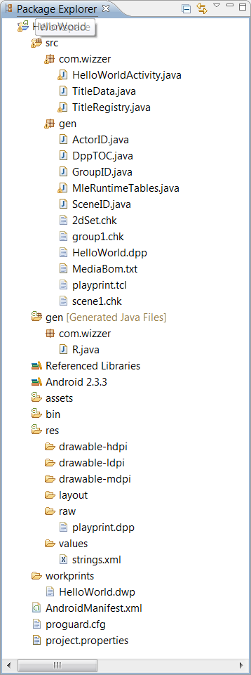
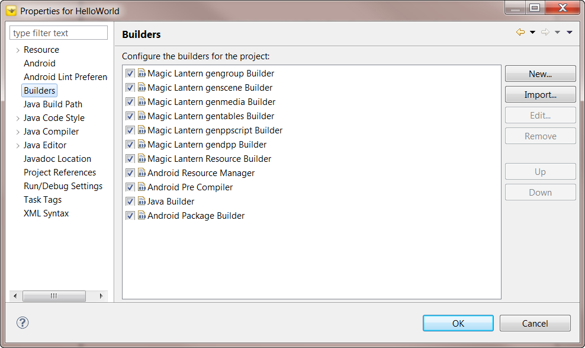

This document discusses the structure of a Magic Lantern title. It attempts to identify some of the common coding elements of a title as well as encourage best-practices that will facilitate software reuse and optimization.
Figure 2.1.1 shows the Eclipse Java Package Explorer displaying the Magic Lantern HelloWorld project created using the default template.

Figure 2.1.1: Default Title Template in Eclipse Package Explorer
The title is comprised of two source directories, gen and src. The gen directory contains one package, com.wizzer. The R class in this package is generated by the Android ADT and contains references to the application resources specified in the res directory. The src directory contains two packages, com.wizzer and gen. The com.wizzer directory contains the application source for the default title template. The gen package contains elements that were generated from the HelloWorld.dwp Digital Workprint (located under the workprints directory.
The Referenced Libraries are the Java archives (JAR files) which provide functionality and resources required by a Magic Lantern title. The core libraries make up the Magic Lantern Software Development Kit, or SDK. The SDK includes:
The title's Digital Workprint can be found in the workprints folder of the Magic Lantern Project. This is a convention used by the Wizzer Works Magic Lantern templates and example source.
Note: The Magic Lantern Project will currently process all Digital Workprint files located in the project with the extension .dwp. There is a known bug where the resulting mastered elements, such as the chunk files, Java source and Digital Playprint, will not be correctly constructed. For this reason, plan to use only one Digital Workprint file per project.
The defatul template workprint is the simplest Digital Workprint that can be processed by the Magic Lantern mastering tools. The Digital Workprint is an ASCII file where the first line in the file must be the comment
#DWP 1.0 ascii
The default template workprint contains a Stage, MyStage, for the Java 2D target platform and an empty Set, called 2dSet (see below). The Set is 640x480 pixels and is located at position (0,0), relative to the Stage's coordinate system.
#DWP 1.0 ascii
( Include $MLE_WORKPRINTS/parts/sets/java/workprints/MleAndroid2dSet.wpf )
( Stage +android MyStage Mle2dStage
( Set 2dSet Mle2dSet
( Property position MlVector2 0 0 )
( Property size MlVector2 640 480 )
)
)
( Scene scene1 MleScene
( Package com.wizzer.mle.runtime.core )
( Group group1 MleGroup
( Package com.wizzer.mle.runtime.core )
)
)
The default template workprint contains one Scene, scene1, encapsulating a Group with no Actors. The name of the Group is group1. This workprint is analogous to a theatrical stage where the set is empty and no performers/actors are present.
The default template workprint is using parts provided by the Magic Lantern SDK. The Stage is of type Mle2dStage which is included in the stages.jar archive. The Set is of type Mle2dSet which is included in the sets.jar archive. The Set is defined in the MleAndroid2DSet.wpf file. The .wpf file contains a digital workprint fragment that defines the properties of the Mle2dSet. It is located in $MLE_WORKPRINTS/parts/sets/android/workprints where $MLE_WORKPRINTS is an environment variable set by the Magic Lantern Studio installation process. If you are using the default installation directory for Magic Lantern Studio, the $MLE_WORKPRINTS will be set to C:\Program Files\WizzerWorks\MagicLanternAndroidStudio.
The MleAndroid2DSet.wpf workprint is specifed as follows
#DWP 1.0 ascii ( SetDef Mle2dSet ( Package com.wizzer.mle.parts.sets ) ( PropertyDef position MlVector2 ) ( PropertyDef size MlVector2 ) )
The Mle2dSet is a class found in the com.wizzer.mle.parts.sets package. The set contains two properties, position and size. Both properties are of type MlVector2, a class found in the mlmath.jar archive. The MleScene and MleGroup classes are found in the com.wizzer.mle.runtime.core package and are provided as part of the mlert.jar archive.
Note: The HelloWorld.dwp workprint may contain a second Stage for the Magic Lantern Studio Rehearsal Player. The target mastering tools do not process this DWP element at this time.
If you study the HelloWorld.dwp workprint closely, you will notice some of the items contain a "+tag" string (e.g. +android and +rehearsal). These tags are used by the Magic Lantern authoring and mastering tools to filter on DWP items while processing the Digital Workprint. For the Android platform, the +android tag is required for the Android Stage. All sub-items, like the Set, are also filtered by the parent item's tag.
The title source is found in the com.wizzer and gen packages. The files are
These files will be fairly common across all Magic Lantern titles targeting the Android platform.
HelloWoprldActivity.java contains the main application entry points, onCreate(), onStart(), onResume(), onPause(), onStop() and onDestroy(). It is responsible for intializing the title, starting the main loop of execution, and cleaning up the title on exit.
TitleData.java implements a class for managing title specific data. It holds a reference to the Digital Playprint, the playprint's table-of-contents, and the Magic Lantern Runtime Engine tables. The table-of-contents, DppTOC, and the runtime tables, MleRuntimeTables, are both generated during the mastering process.
The TitleRegistry class manages a registry of Actors that are loaded from the Digital Playprint. The TitleRegistry may also be used to track Actors that are created dynamically during title execution.
The R class is generated by the Android ADT. The class will be created automatically when you make any change to an external resource file of folder. The R class contains static subclasses for each of the resource types for which you've defined at least one resource. Each of the subclasses within R exposes its associated resources as variables, with the variable names matching the resource identifiers - for example, R.string.app_name or R.raw.playprint.
The ActorID class is generated when the Digital Workprint is mastered. It contains a global index of the Actors in the title. The value of the index is relative to the playprint's table-of-contents, DppTOC. The ActorID class also maintains the Actor's index into the the Group it is associated with. These indices may be used to traverse the Digital Playprint at runtime.
The GroupID class is also generated when the Digital Workprint is mastered. This class contains definitions for mapping Group names to their position in the global array of all groups.
The SceneID class is also a generated component. SceneID contains definitions for mapping Scene names to a global integer constant. It also contains definitions for mapping Group and Scene names to their position in the array returned by the Runtime Engine utility, MleDppLoader.mleLoadScene().
MleRuntimeTables.java contains the mastered tables for accessing Actor Types and their registered properties. It also contains tables for accessing Role Types, Set Types, Set Instances and their registered properties. Finally, the tables for accessing Group and Scene Types are also generated here. The MleRuntimeTables class is essentially a dictionary of the Actor, Role, Group and Set classes specified in the Digital Workprint.
The DppTOC.java file contains the static initializations for the global symbols representing the Digital Playprint table of contents. The DppTOC class is a map of the Digital Playprint layout.
Title initialization involves initializing the platform specific data. For the Android platform, the data is managed by the MleJ2dPlatformData class. Platform data identifies resources such as the width and height of the platform device. Title initialization also involves initializing the title registry of parts. The registry will add itself as an Observer to the Magic Lantern Runtime Engine MleTables class so that it will be notified when an Actor has been loaded from the Digital Playprint. The title registery is managed by the com.wizzer.TitleRegistry class.
After the title registry is initialized, the title loads the Digital Playprint. The name of the playprint is extracted from the title specific data contained in the com.wizzer.TitleData class.
The next step in title initialization involves creating an event dispatcher. The event dispatcher, MleEventDispatcher, is used to process user events such as mouse and key input. It may also be used to handle generic software events generated by Actors.
The title is responsible for creating a scheduler and registering phases of execution. The phases of execution are exercised in the title's main loop (see "Execution Model Overview" for more information). By default, the Wizzer Works titles use six phases of execution:
After the scheduler has been primed, the title must create and initialize its Stage.
The final step in title initialization is to load the first Scene from the Digital Playprint. This step will populate the title with the first Group of Actors. As the actors are loaded, their properties will be initialized with static values retrieved from the Digital Playprint.
The main loop of execution is an infinite loop, dispatching pending events and running the scheduled phases of execution. The loop will be broken when an event occurs indicating that the application should exit.
Typically the title will clean up by properly disposing resources obtained while executing the application. Unfortunately, the current Wizzer Works templates do not yet follow this advice.
The Digital Playprint is a binary file that is consumed by the title at runtime. The file is generated during the target mastering process and can be found in the "src/gen" directory. The Magic Lantern Studio Project is configured to master the Digital Workprint whenever it is modified by the application developer. This feature is handled by the Eclipse Builders associated with the project. Figure 2.1.2 shows the Builders for the default template.

Figure 2.1.2: Default Title Project Builders
For more information concerning the title mastering process, please read Title Mastering Process.
The Magic Lantern SDK is a collection of libraries used to implement a Magic Lantern title. The following table lists the Android archive files in the SDK.
| mlert.jar | The Magic Lantern Runtime Engine | Runtime EngineAPI |
| mlmath.jar | A math library that provides support for vectors and matrices | Math API |
| parts.jar | Utilities for Magic Lantern components (i.e. actors, roles, sets, stages, etc.) | Parts API |
| actors.jar | Magic Lantern Actors | Actors API |
| roles.jar | Magic Lantern Roles for the Android target platform | Roles API |
| sets.jar | Magic Lantern Sets for the Android targe platform | Sets API |
| stages.jar | Magic Lantern Stages for the Android target platform | Stages API |
| mrefs.jar | Magic Lantern Media References | Media References API |
| props.jar | Utilities for actor and set properties | Properties API |
Table 2.1.1: Magic Lantern SDK Libraries